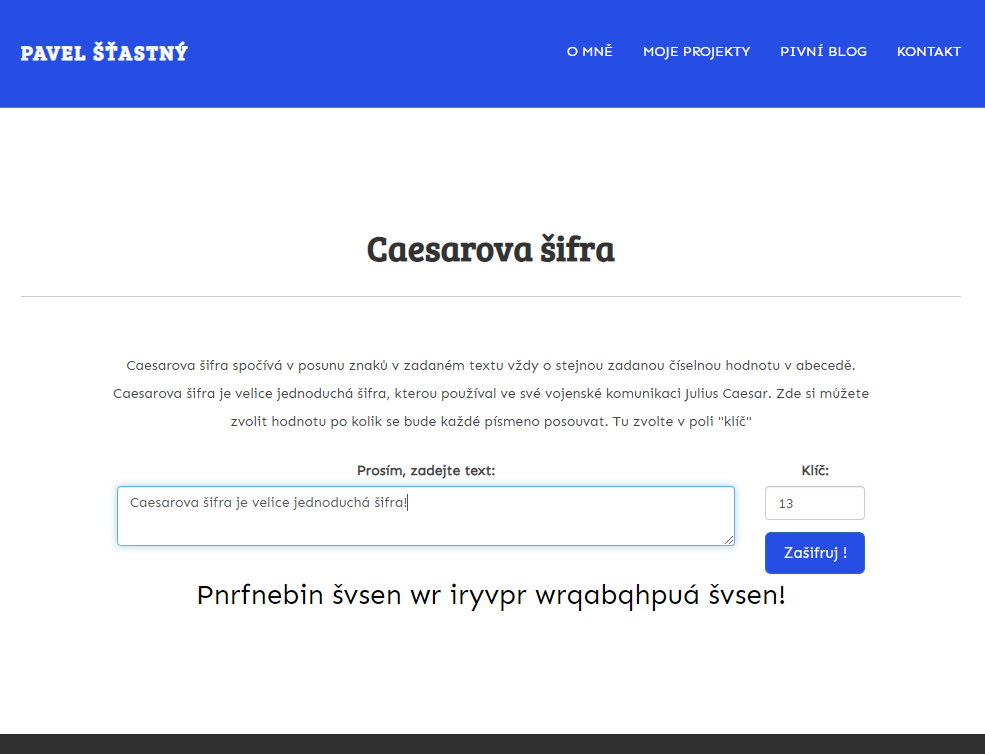

Moje projekty
V této části se můžete podívat na některé moje projekty. Některé jsou cvičné, některé se dají považovat za 100% fungující tak jak bylo zamýšleno.
Landing page pro živnostníka
Tento web jsem vytvořil pro kamarádku, která pracuje jako laktační poradkyně. Web momentáně není dokončený, chybí tam skutečné informace od kamarádky, ale web je připraven k použití. Vytvořil jsem ho za použití čistého HTML/CSS a s pomocí frameworku Skeleton. Skeleton je velmi malý framework a použil jsem ho hlavně kvůli responzivnímu grid systému. Projekt je dočasně umístěn na mém githubu.
Jednostrnákový formulář
Projekt vytvořený na procvičení stylování formuláře. Nakódovaný v čistém CSS a HTML bez použití frameworků. Je to cvičný projekt, takže odeslání formuláře nefunguje :) Odkaz je na codepen.io kde je dostupný i zdrojový kód.
Palindrom checker

První ze série mini-projektů z FCC. Zadání znělo vytvořit funkci, která zjistí jestli je zadané slovo palindrom. Funkci jsem následně implementoval na svůj web pomocí vanilla JS.
Převodník do římských čísel
Druhý ze série mini-projektů z FCC. Cílem je vytvoření funkce, která konvertuje arabské číslice na římské. Následně jsme projekt umístil na můj web a zprovoznil jsem ho pomocí vanilla JS.
Caesarova šifra
Třetí ze série mini-projektů z FCC. Cílem je vytvořit algoritmus, který zašifruje text o zadaný počet znaků. Následně jsem mini-projekt zprovoznil zde pomocí vanilla JS.
React App
Toto je má první aplikace, ve které pracuji s ReactJS knihovnou. Aplikace je jednoduchá, využívá také frameworku Materialize CSS (tlačítka, design, barvy). Aplikaci lze spustit přímo zde a tady je odkaz na repo na githubu.